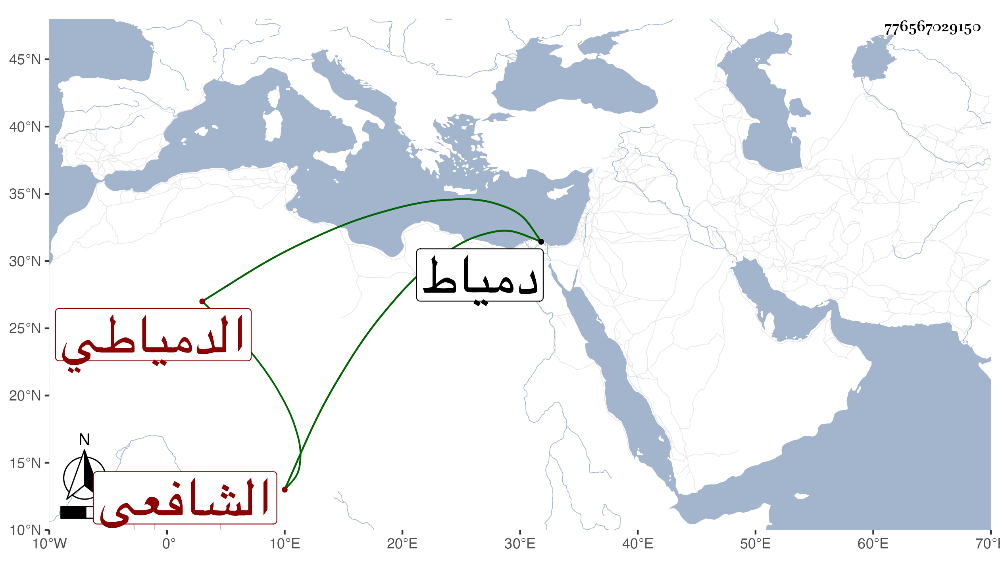

0902Sakhawi.DawLamic.ITO20230111-ara1.EIS1600.776567029150
Biography ID: 776567029150
525
عبد السلام بن موسى بن عبد الله بن محمد الزين بن الشرف البهوتي الدمياطي الشافعي والد النور علي والولوي محمد والجمال عبد الله يوسف وأخو عبد الرحمن المذكورين في محالهم . ولد سنة خمس وثلاثين وثمانمائة تقريبا بدمياط ونشأ بها فحفظ القرآن عنه أبيه وتلا به تجويدا وغيره على الزينين الهيثمي وجعفر وحضر دروس الفقيه علم الدين بن الفران بل كان هو قارئه برهة وكذا أخذ عن الشهاب البيجوري وغيره وفي النحو عن ابن سويدان ولقي الفرياني فأخذ عنه وسمع على شيخنا والرشيدي وغيرهما واختص بالفخر الديمي لمصاهرة بينهما وأم بالجامع البدري بعد أبيه وقرأ على العامة في المواعظ والرقائق ونحوهما وأدب الأبناء مدة فانتفع به جماعة وكتب بخطه شيئا كثيرا حبس جميعه على بنيه سوى ما كتبه بالاجرة من مصاحف وغيرها وخطه جيد صحيح ، ولم يزل على طريقته في الخير والبركة واعتقاد الناس فيه حتى مات في أواخر صفر سنة ست وتسعين بدمياط بالاسهال شهيدا وتولى البيجوري غسله ودفن بجوار الشيخ فاتح بتربة الشرفاء بني عجلان رحمه الله وإيانا .
